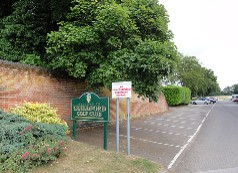

大会の名称は 2010 Riichi Mahjong UK Open 、場所はギルドフォードゴルフクラブ。リーチ麻雀大会という以上、基本的に一般リーチルール。ただし食いタンなし、食い換えアリ（ヨーロッパ麻雀協会（ＥＭＡ)のリーチルール）。

ゴルフ場の外の風景と、麻雀が行われたクラブハウス
参加者は48名。48人ものリーチ麻雀プレーヤーが存在するとはオドロキだが、プレーヤーの水準からの印象では、それほど普及しているわけではなさそうとのこと。
受付風景 参加証
優勝トロフィー等
会場風景
すべて手積み卓、というより四角い机に麻雀マットが敷いてあるという感じ。

イギリス人は牌を立てるときに牌抬（補助道具）を使用していた。
牌はすべの卓が同じ牌。中国麻雀牌の小さいサイズ、もしくは台湾麻雀牌のサイズ。しかし卓のサイズに比べて牌が大きいので、卓が狭く感じた。
点棒はリーチ棒４本と本場数を表すための100点棒を４本だけ持ってリサイクルして使う。得点は、毎局 終わるたびに記録紙に記入する。
優勝のAns Hoogland さん（左）。
※ローエングリンさんは ２．２．１．２ で ７位であったとのこと。
この大会が どういう組織によって開催されたのか詳しいことは分からない。いちおう下記が、その団体のHP http://eventbookings.com/im0139/
|